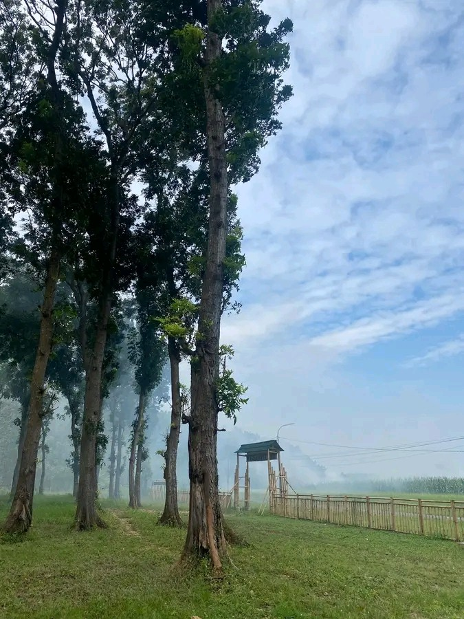
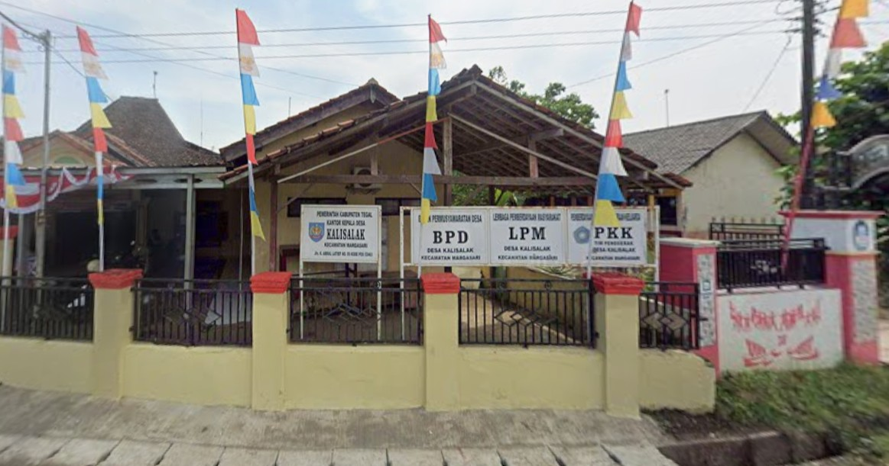
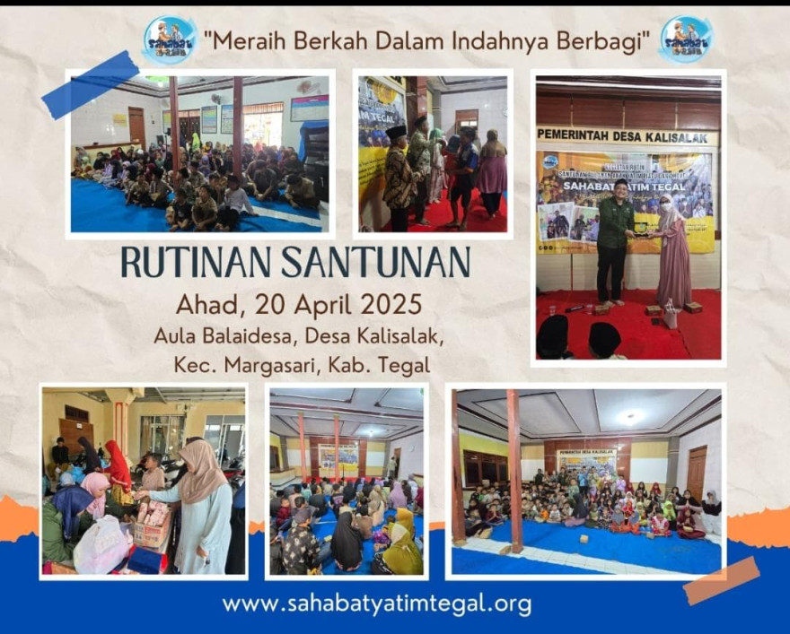
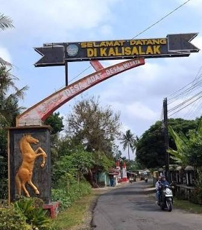
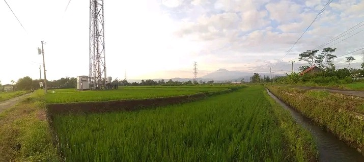
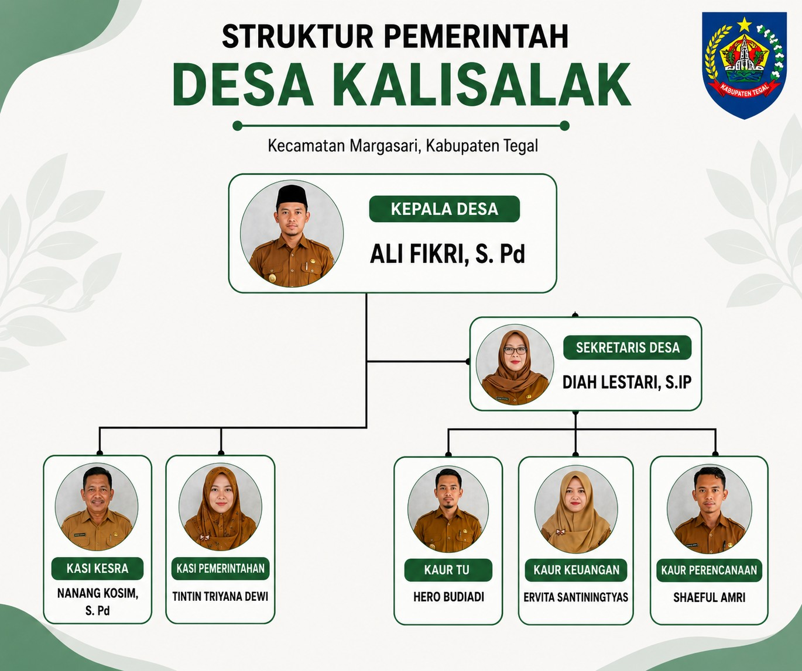

Website informasi Desa Kalisalak, Kecamatan Margasari, Kabupaten Tegal.
Desa Kalisalak merupakan salah satu desa yang terletak di Kecamatan Margasari, Kabupaten Tegal, Provinsi Jawa Tengah. Desa ini terkenal sebagai "mutiara tersembunyi" yang diapit oleh Bukit Kapur dan Bukit Rajagumantung, serta menyimpan sejumlah peninggalan sejarah dan pesona alam pedesaan yang asri.
Desa Kalisalak memanfaatkan berbagai sarana pelayanan, baik secara digital melalui media sosial, dan grup WhatsApp, maupun secara langsung melalui kantor desa. Hal ini dilakukan untuk memastikan informasi dan pelayanan dapat diakses oleh seluruh warga dengan mudah, cepat, dan merata.
Sistem penyebaran informasi juga didukung melalui media konvensional seperti pengumuman masjid, papan pengumuman, dan jaringan RT/RW, sehingga seluruh masyarakat dapat terlayani dengan baik.
Sekilas suasana dan kehidupan masyarakat Desa Kalisalak.





Klik foto untuk memperbesar

Pemerintah Desa Kalisalak menyediakan berbagai layanan bagi masyarakat, baik secara digital maupun secara langsung di kantor desa.
Informasi desa disampaikan melalui dua jalur utama agar seluruh warga dapat mengakses informasi secara merata.